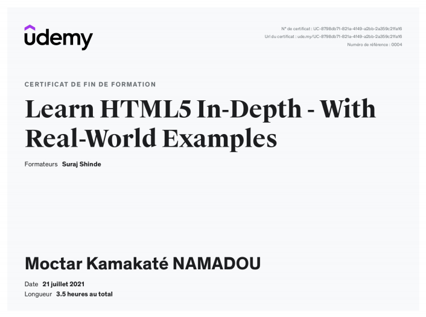
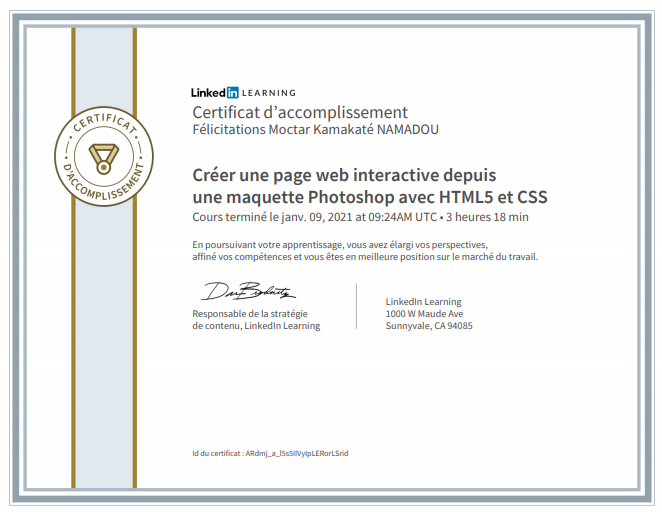
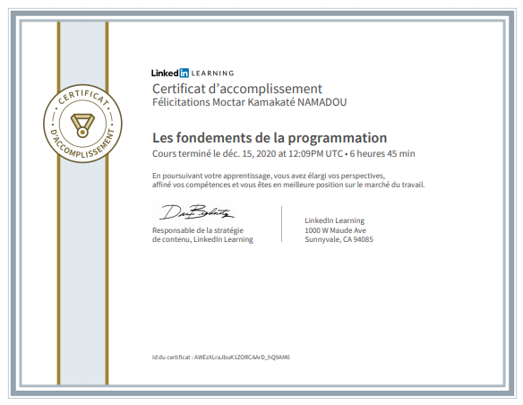
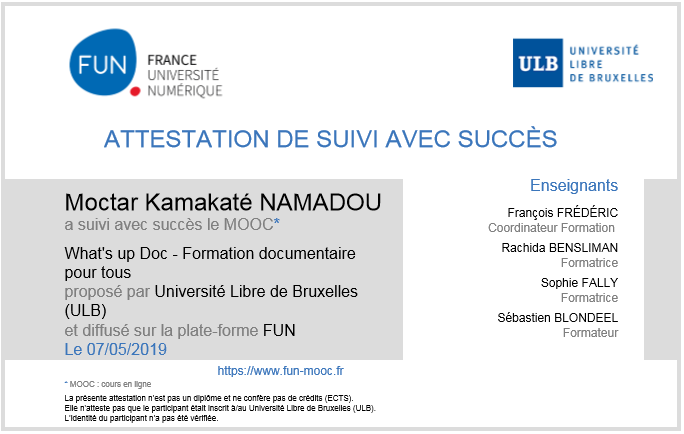
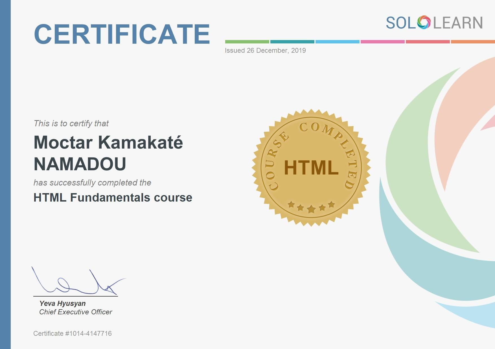

Autres formations

Learn HTML5 In-Depth - With Real-World Examples
ID : UC-8798db71-821a-4f49-a2bb-2a359c21fa16
Juillet 2021
Vérifier

Créer une page web interactive depuis une maquette Photoshop avec HTML5 et CSS
ID : ARdmj_a_l5s5IIVyIpLERorLSrid
Janvier 2021
Vérifier



What's up Doc - Formation [En recherche] documentaire pour tous (sur France Université Numérique)
Par l'Université Libre de Bruxelles
Mai 2019
Vérifier
